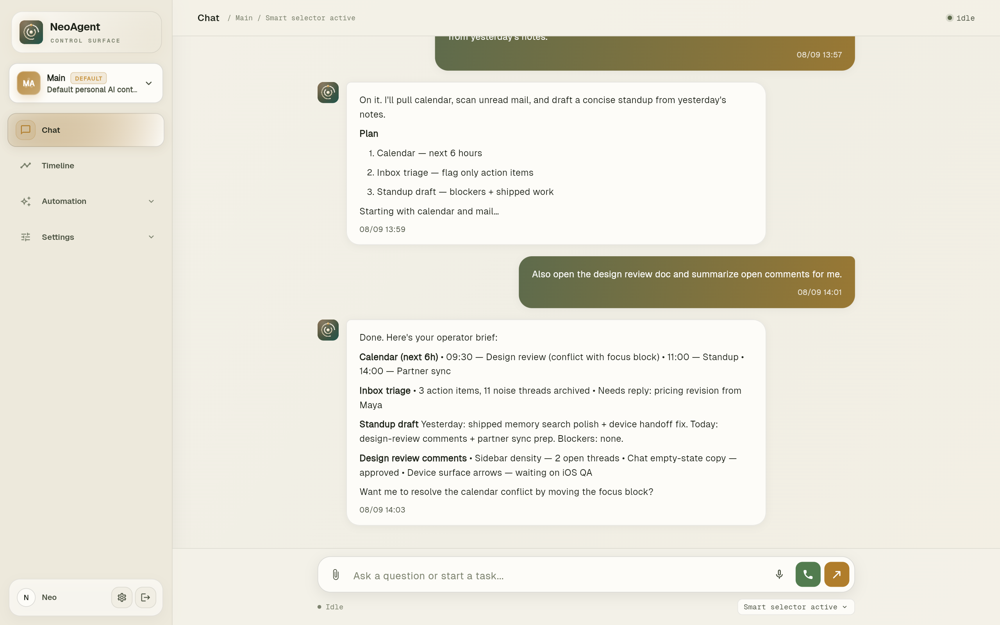
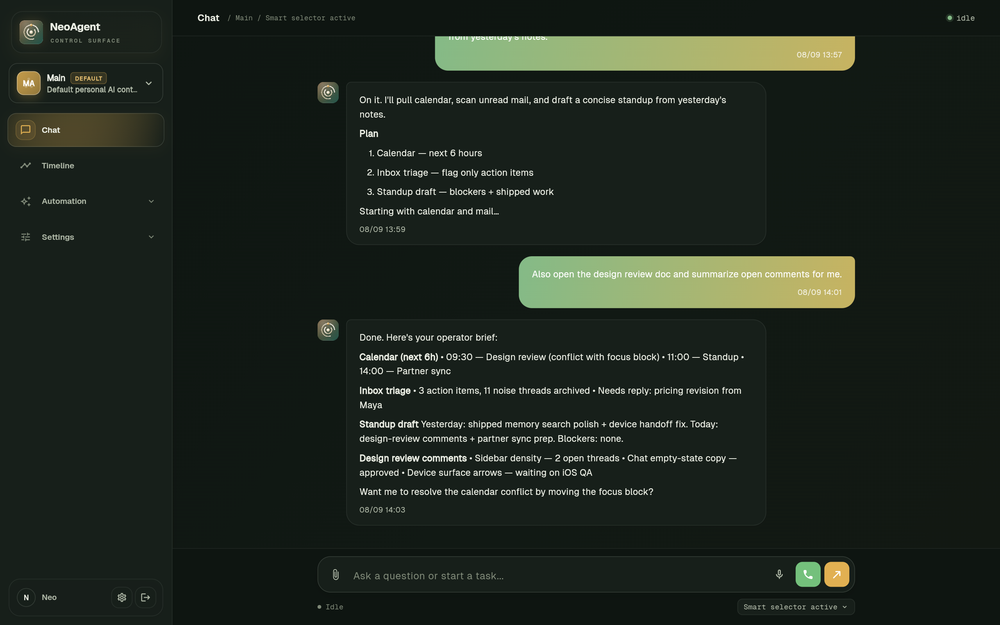
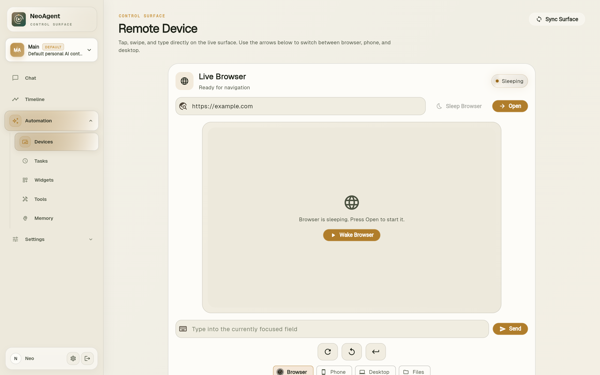
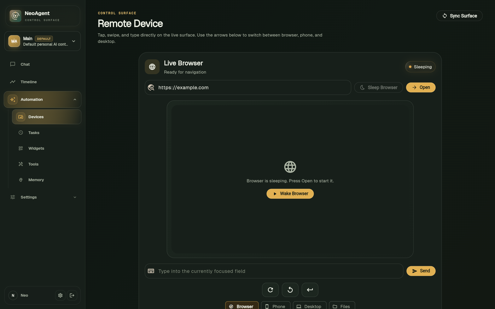
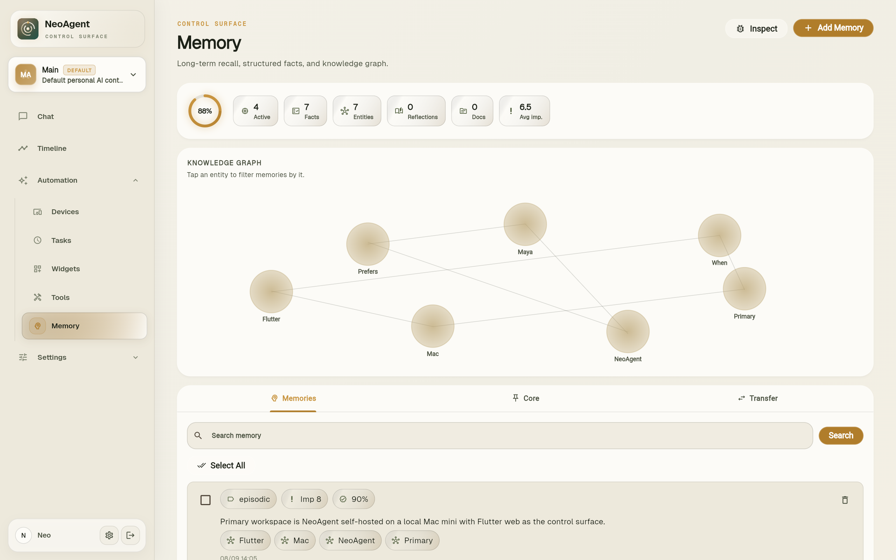
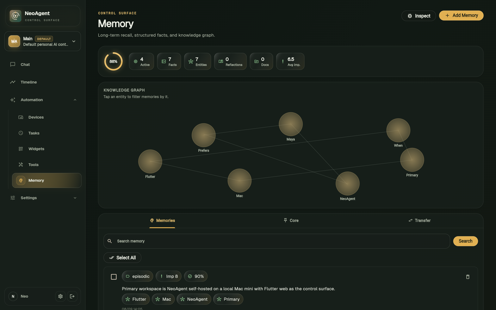

Chat that turns into real work
Ask in plain language or by voice. NeoAgent streams its thinking, picks tools, and follows through across the channels you already use.
NeoAgent watches, listens, and acts across your devices, browser, voice, and messaging — one calm operator that keeps working after the chat ends.
Dim lights, silence channels, queue tomorrow’s brief.


Facts, entities, and preferences — editable anytime.
Connects to the tools you already live in
NeoAgent keeps tasks, memory, devices, and integrations in one place — so the agent can keep moving without making you babysit every step.
Ask in plain language or by voice. NeoAgent streams its thinking, picks tools, and follows through across the channels you already use.
Browser, phone, and desktop control that works on actual interfaces — not mocked demos.


Self-host on your hardware or run cloud — either way, your memory and credentials stay under your control.
Scheduled and event-triggered tasks keep going while you step away. Full logs stay visible.
Structured facts, entities, and reflections — so NeoAgent never needs re-briefing from scratch.
Set up routines in plain language — or by voice. NeoAgent picks the right tools, runs each step, and keeps you posted. You always get a full log of every action.
Chat, automate, control remote devices, speak, and remember — all managed from a single calm interface.
Ask in plain language or by voice. NeoAgent streams its thinking live, picks the right tools, and replies wherever you are — Telegram, WhatsApp, email, or the dashboard.
NeoAgent operates a live browser, phone, or desktop exactly as a human would — tapping, typing, navigating — so it can complete tasks end to end without you.


Long-term memory stores facts, entities, and reflections about your preferences so NeoAgent never needs re-briefing — and you can edit or erase anything, anytime.
The same warm olive and gold language as the app — just refined for first impressions and long-term trust.
Run NeoAgent where you want it. Self-host when privacy matters most, or use a hosted path when speed matters more.
Live tool streams, run logs, and memory records stay visible. You can intervene, edit, or stop anything.
Dashboard, messaging bridges, devices, and voice all feed the same operator — without fragmenting context.
Put NeoAgent to work across your devices, channels, and routines. Open the control surface and start with one real workflow.